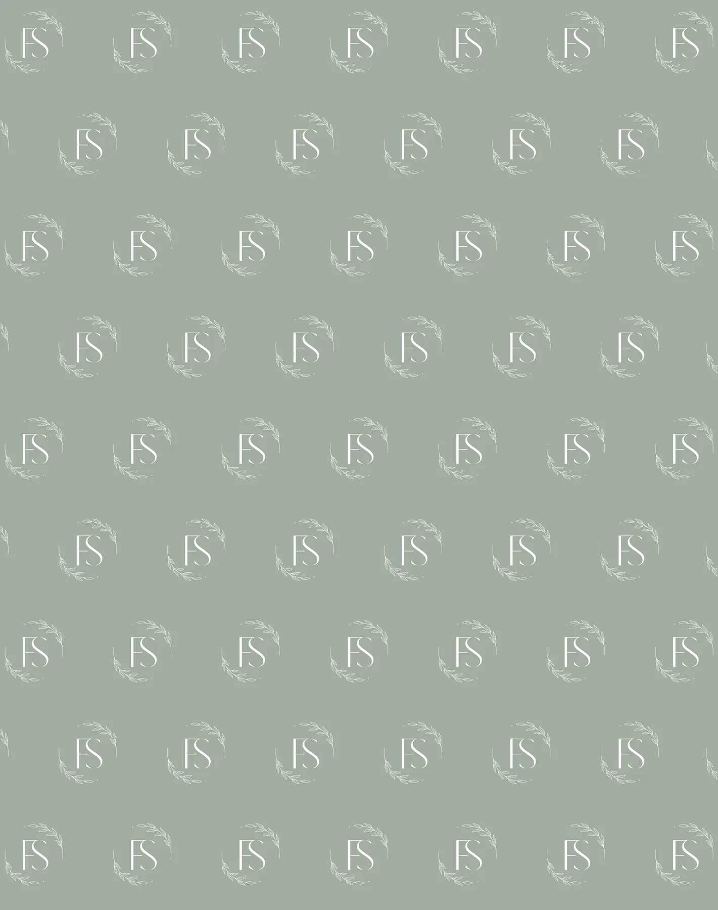

Conceito 15 - Clarity
Limites legais e profissionais para a apresentação Sofiati.
Legal content keeps the presentation responsible until final service, regulatory e privacidade review.
- Franciele Sofiati
- CRBM 6277
- Biomedicina Estética Avançada
- Londrina, PR
- Avaliação profissional em primeiro lugar

Arquitetura de referência
Franciele Sofiati - CRBM 6277 - Biomedicina Estética Avançada - Londrina, PR. Clarity uses journal de skincare de luxo discreto, navegação dividida, menu dividido entre imagem e texto e rodapé de skincare de luxo. The content remains Sofiati-specific, ética e avaliação-first.
Limites profissionais
central legal
This página routes para privacidade, cookies, acessibilidade e contato details.
Clarity method
central legalLegal usa journal de skincare de luxo discreto, navegação dividida, menu dividido entre imagem e texto e rodapé de skincare de luxo enquanto preserva o sistema de marca Sofiati.
Limites profissionais
aviso profissional
Website information is educational e cannot replace individual avaliação profissional.
Criado para Clarity com o tom Sofiati orientado por avaliação, calma clínica botânica e limites responsáveis.
Criado para Clarity com o tom Sofiati orientado por avaliação, calma clínica botânica e limites responsáveis.
Criado para Clarity com o tom Sofiati orientado por avaliação, calma clínica botânica e limites responsáveis.
Criado para Clarity com o tom Sofiati orientado por avaliação, calma clínica botânica e limites responsáveis.
Criado para Clarity com o tom Sofiati orientado por avaliação, calma clínica botânica e limites responsáveis.
Limites profissionais
aviso legal de termos
Static presentation content requires final legal, medical e service review before production.
- aviso legal de termos
- avaliação profissional
- personalizados cuidado
- tecnologia com critério
- acompanhamento visibilidade
Limites profissionais
aviso sem garantia
No página may promise fixed resultados, procedures without risk or identical outcomes.
- 01aviso sem garantiajournal de skincare de luxo discreto mantém esta página distinta enquanto permanece dentro da identidade Sofiati.
- 02avaliação profissionaljournal de skincare de luxo discreto mantém esta página distinta enquanto permanece dentro da identidade Sofiati.
- 03personalizados cuidadojournal de skincare de luxo discreto mantém esta página distinta enquanto permanece dentro da identidade Sofiati.
- 04tecnologia com critériojournal de skincare de luxo discreto mantém esta página distinta enquanto permanece dentro da identidade Sofiati.
- 05acompanhamento visibilidadejournal de skincare de luxo discreto mantém esta página distinta enquanto permanece dentro da identidade Sofiati.
Limites profissionais
regra de não exibir endereço completo
Only Londrina, PR is published; no interactive rota or street address is included.
Clarity method
regra de não exibir endereço completoLegal usa journal de skincare de luxo discreto, navegação dividida, menu dividido entre imagem e texto e rodapé de skincare de luxo enquanto preserva o sistema de marca Sofiati.
Limites profissionais
link da declaração de acessibilidade
Acessibilidade is treated as part de launch readiness, não an afterthought.
Criado para Clarity com o tom Sofiati orientado por avaliação, calma clínica botânica e limites responsáveis.
Criado para Clarity com o tom Sofiati orientado por avaliação, calma clínica botânica e limites responsáveis.
Criado para Clarity com o tom Sofiati orientado por avaliação, calma clínica botânica e limites responsáveis.
Criado para Clarity com o tom Sofiati orientado por avaliação, calma clínica botânica e limites responsáveis.
Criado para Clarity com o tom Sofiati orientado por avaliação, calma clínica botânica e limites responsáveis.